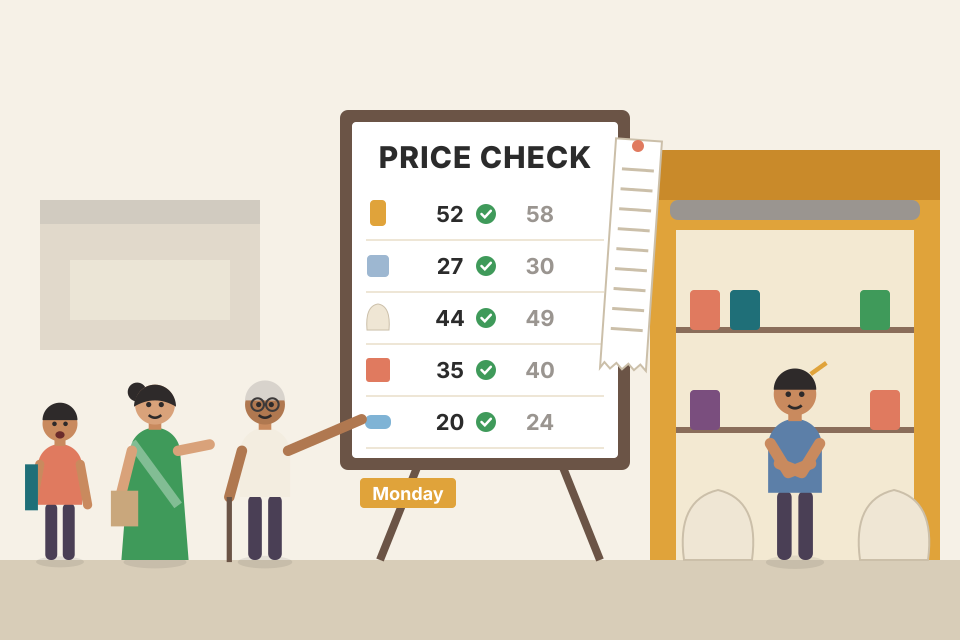
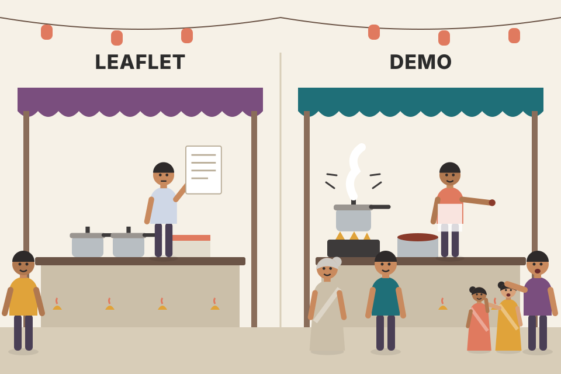
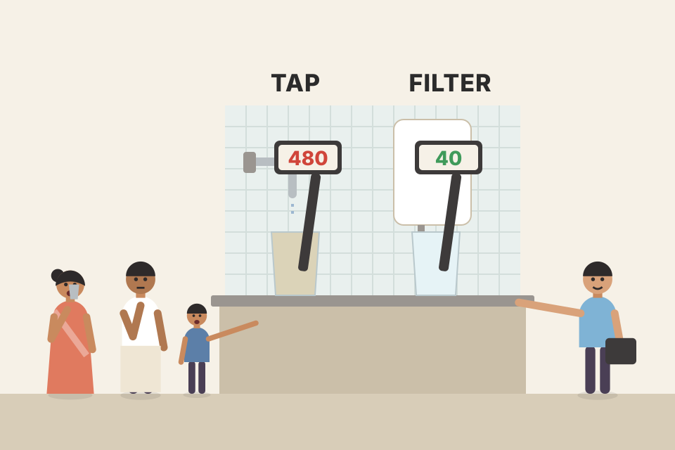
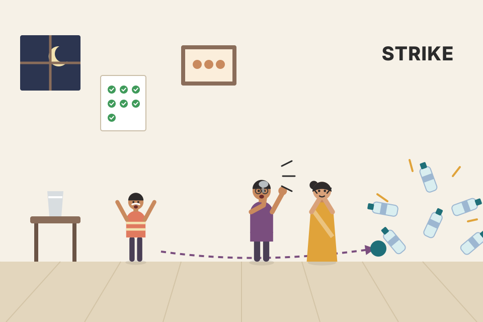
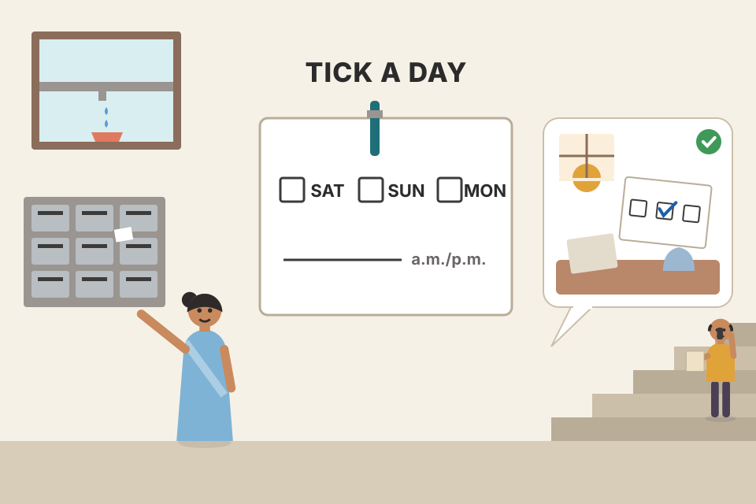
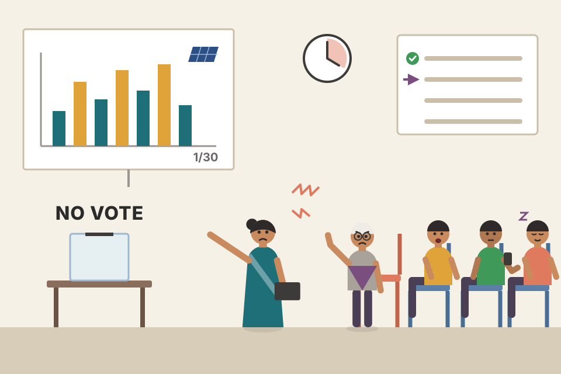
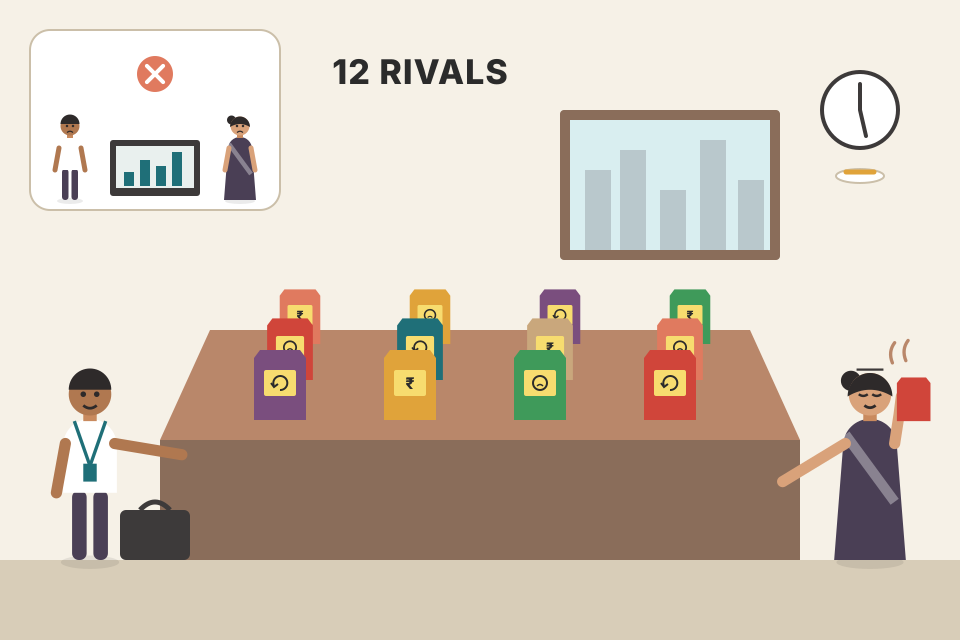

DALE CARNEGIE · HOW TO WIN FRIENDS · PART THREE · CHAPTER 11 · PDF p189–192
The Movies Do It. TV Does It. Why Don't You Do It?
A true fact, merely stated, is easy to ignore. The same fact, shown so people can see, hear or hold it, gets attention and changes minds.
This is one of the two shortest chapters of Part Three (four pages), and almost all of it is stories. A newspaper beats a rumour by turning one day's paper into a thick book. A shop window with two live rats sells five times as much rat poison. A cash-register salesman throws coins on a grocer's floor; a father turns tidying-up into a toy train; an employee who cannot get a meeting sends her boss a fill-in-the-blanks reply slip. The last story is the sharpest: a researcher who lost an argument-filled first meeting wins the second by dumping thirty-two jars of the client's competitors on his desk, each tagged with the findings. Same facts both times; only the showing changed.
Principle 11 of Part Three
Dramatize your ideas.
How the chapter fits together
pdf p189–192 · read this first
Where it sits. This is chapter 11 of the twelve in Part Three, "How to Win People to Your Way of Thinking". The Part began with the "stop" rules (avoid arguments, never say "you're wrong", admit your own mistakes), moved through ways to make the other person feel heard (let them talk, let them own the idea, see their side, be sympathetic), and just before this asked you to appeal to nobler motives. Those chapters are mostly about attitude. This one is about delivery: once your idea is fair and aimed at what the other person cares about, show it in a way they cannot overlook. The Part ends next with "throw down a challenge" (whose opening story, a number chalked on a mill floor, is itself a little piece of drama), and that page also lists all twelve Part Three principles.
The argument as a chain. Each row reacts to the one before it.
Problema true claim, stated plainly→ignored, doubted, or argued over
First proofa rumour: "too many ads, too little news"→the Bulletin prints one day's reading as a 307-page book
The claimstating a truth isn't enough→make it vivid, interesting, dramatic: showmanship
Sellingtwo live rats in a window (5× sales)TV demospennies on a grocer's floor
At homea suitor on his kneesa toy "train" that clears the floor
At worka fill-in reply slip gets a meeting32 jars on the desk turn an argument into an hour of interest
PrincipleDramatize your ideas→same facts, shown instead of told
Limitsthe drama only carried true, relevant facts→a stunt with nothing behind it is a gimmick (our note)
About the title: in Carnegie's 1936 original the line was about movies and radio; the 1981 revision swapped in television. Today you would add YouTube, Instagram reels and product demo videos. The point is the same: the media that win attention show things happening rather than describing them. (The original-edition detail is Beyond the book.)
01 · THE OPENING STORY
The Philadelphia Evening Bulletin answers a rumour with a 307-page book
pdf p189
Carnegie opens with a business in trouble, and a reply that used no arguments at all.
Philadelphia Evening Bulletin"many years ago"a whispering campaign307 pages · a few cents
The threat. Someone was spreading a damaging rumour among the paper's advertisers: readers were losing interest in the Bulletin because it now carried too many ads and too little news. For a newspaper that lives on advertising, this was dangerous. If advertisers believed readers had gone, the advertisers would go too. The rumour had to be stopped quickly.
The move. Instead of publishing a denial or a page of statistics, the paper took one ordinary day's edition, cut out every piece of reading matter (all the news and features, nothing else), sorted it into categories and printed it as a book. They called it One Day.
The result. The book ran to 307 pages, as thick as a hardcover book you would pay several dollars for. And the Bulletin had printed all of it in a single day and sold it for a few cents. Nobody holding that book could keep believing "too little news".
The point Carnegie draws. The book dramatized a fact: the paper carried a huge amount of interesting reading. Carnegie argues it made the case more vividly, more interestingly and more convincingly than pages of figures or any amount of talk could have.
Notice what kind of drama this is. It was not a stunt or a slogan. Every page of One Day was the paper's own real content. The "show" was simply the truth, arranged so that people could weigh it in their hands. That pattern repeats through the whole chapter.
Picture it

A small kirana shop is losing customers because a new supermarket says "the corner shop is always more expensive". The owner could argue at the counter all day. Instead he prints a board by the door: twenty everyday items, his price next to the supermarket's, updated every Monday, with the supermarket's own receipt pinned beside it. Customers stop to read it; the rumour quietly dies.
Where it breaks: the board only works because his prices really are lower on most items. The Bulletin trick, like the kirana board, is a way to make a true fact visible. If the facts were against him, a dramatic board would just make the problem more visible.
What's happening behind it
The book's explanation: a dramatized fact is more vivid, interesting and impressive than figures and talk. The advertiser did not have to trust the paper's word; he could see the thickness of the book and do the comparison (a book's price against a newspaper's) on his own.
Beyond the book: psychologists call this the vividness effect: concrete, image-rich information is noticed and remembered far more than abstract summaries of the same facts (Nisbett and Ross, 1980). There is also a persuasion bonus: a conclusion people reach themselves ("that's a whole book!") is held more firmly than one they are told, which is why the Bulletin never had to say "the rumour is false".
At work
Someone in the org keeps saying "the platform team never ships anything". You could post a reply listing ticket counts. Or you could do the One Day move: take one ordinary week, gather everything the team actually shipped (the merged PRs, the migrated services, the incidents closed) and put it on one page or one screen, so it can be scrolled through. The thickness of the list does the arguing.
Interview angle. "How do you show the impact of work that isn't visible?" A strong answer names an artifact: a changelog of a quarter's work, a before/after latency graph, a demo. It shows you know that unseen work has to be made visible, not just claimed.
"This is the day of dramatization": two live rats and a night of TV ads
pdf p189–190
Carnegie's thesis. We live, he says, in an age of dramatization. Simply stating something true is not enough. The truth has to be made vivid, interesting and dramatic, and that takes showmanship. The movies do it, television does it, and if you want people's attention, you will have to do it too.
"Merely stating a truth isn't enough."Carnegie (pdf p189)
Evidence 1: the shop window. People who design window displays know this power well. Carnegie's example: the makers of a new rat poison gave shops a window display that included two live rats. In the week the rats were on show, sales jumped to five times their normal rate.
Evidence 2: television commercials. Carnegie suggests an exercise: sit in front of the TV for an evening and study what each advertiser does. You will see that they rarely just tell you; they show you a contest you can watch:
an antacid changes the colour of acid in a test tube, while its rival does not;
one soap or detergent gets a greasy shirt clean while the other brand leaves it grey;
a car weaves through a run of turns and curves, which convinces far better than being told it handles well;
happy faces show how content people are with all kinds of products.
Each one dramatizes for the viewer the advantage of whatever is being sold, and, Carnegie notes, they do get people to buy.
Dated example. A shop window with live rats would raise animal-welfare and hygiene objections today, and 1981 TV ads look quaint now. Modern equivalents: the phone-drop video, the side-by-side "our app loads in 1 second, theirs in 6" demo, an unboxing reel, a live product demo on stage.
Which one is dramatized?
Pick the version you think works best.
Picture it

Two pressure-cooker sellers at a Diwali mela. One holds up a leaflet: "5-layer base, safety valve, 10-year warranty." The other has a burner going, cooks a batch of rajma in front of the crowd, lets the whistle blow, and hands out spoonfuls. Guess which stall has the queue.
Where it breaks: the rajma demo proves "it cooks", not "it lasts ten years". Drama is good at making a claim felt; it can also make people forget to ask about the claims you didn't show. A good buyer (or a good engineering reviewer) still asks for the warranty card.
What's happening behind it
The book's explanation: attention goes to what is vivid. The rats and the test tube turn an invisible benefit ("kills rats", "neutralizes acid") into something you watch happen.
Beyond the book: several well-studied effects stack here. The picture superiority effect: images and events are remembered better than words. Seeing is believing: a demonstration feels like evidence you gathered yourself, so it skips some of the doubt we apply to claims. And a side-by-side contrast (clean shirt next to grey shirt) gives the brain a comparison to make, which is more engaging than a single number. The same research warns that vivid evidence can outweigh better but duller evidence, which is why it persuades even when it shouldn't.
At work
In a design review, "the new cache cuts p99 latency from 800 ms to 120 ms" is a sentence people nod at and forget. Running the same request against both versions on the screen, with the slow one visibly hanging, is the antacid test tube: people feel the difference and start asking how soon it can ship. For a bug report, a 20-second screen recording does what three paragraphs of "steps to reproduce" cannot.
Interview angle. In a system-design interview, a small diagram with the request path drawn and the bottleneck circled is the "window display". Interviewers follow a picture more easily than a monologue, and it invites them to point and ask.
Connects to
Carnegie's earlier advice to talk in terms of what the other person wants: Part One, Ch.3 "Arouse an eager want". Every TV demo shows the viewer's benefit, not the maker's pride.
Jim Yeamans throws a handful of pennies on the grocer's floor
pdf p190
Carnegie insists this is not only for advertisers with big budgets: you can dramatize ideas in business or anywhere in life, and it's easy. His first ordinary-person story is a salesman's.
Jim YeamansNCR (National Cash Register)Richmond, Virginiaa neighbourhood grocer
The situation. Visiting a neighbourhood grocery, Yeamans noticed that the cash registers at the check-out counters were badly out of date.
The move. He went to the owner and told him he was literally throwing away pennies every time a customer went through his line, and as he said it, he flung a handful of pennies onto the floor.
"You are literally throwing away pennies…"Jim Yeamans to the grocer, as quoted by Carnegie (pdf p190)
What happened. The owner suddenly paid close attention. Yeamans admits the words alone should have interested him, but it was the sound of coins hitting the floor that really stopped him. Yeamans came away with an order to replace all of the old machines.
Why it worked, in the chapter's terms. The claim ("old registers lose you money") is abstract and easy to wave away; every salesman says his product saves money. The pennies turned a figure on a brochure into a sound, a mess on the floor, and the slightly shocking sight of money being treated as rubbish, which is exactly what Yeamans was saying the grocer was doing.
Picture it

A water-purifier salesman in a Chennai apartment doesn't recite TDS numbers. He pours a glass from the family's tap, drops in his little tester and the reading flashes 480; then a glass from his demo unit reads 40. The family has been drinking from that tap for years, and the number on the screen suddenly makes it personal.
Where it breaks: the tap reading is the family's own water, so it is real evidence about their situation. Yeamans's pennies were a symbol, not a measurement; they made his point loud but did not prove the size of the loss. A buyer could fairly ask "how many pennies, exactly?"
What's happening behind it
From the story: Yeamans says it himself: the words should have been enough, but people don't respond to "should". A sudden sound breaks the grocer's routine, and the image of coins on the floor sticks.
Beyond the book: behavioural economists would add loss aversion (Kahneman and Tversky): losses hurt roughly twice as much as equal gains please. Yeamans framed his pitch as money being thrown away, a loss, rather than "you could save", a gain, and then made the loss visible. Turning a metaphor into an action is also a classic teaching and stage technique: a concrete image is easier to remember than the sentence it stands for.
At work
You want budget to fix a slow, flaky CI pipeline. "Builds take 25 minutes and fail 1 time in 5" is a number. The pennies version: "Every engineer here waits for CI about 6 times a day. That's 2.5 hours per person per day, about ₹1.2 lakh a week across the team (modelled, at our blended cost)", and you put a live counter on the team dashboard showing hours waited this week. Now the waste is something people watch tick up.
Interview angle. "Tell me about a time you got buy-in for technical debt." Good answers translate the debt into a cost the listener cares about (hours, incidents, customer churn) and show how you made it visible. That is Yeamans's move with a spreadsheet instead of coins.
Rewrite it: from stated to shown
Pick a flat, true message. Think how you would dramatize it, then reveal one way to do it and what changed.
A suitor on his knees, and the toy train that tidied the playroom
pdf p190
Carnegie says dramatization works in home life too, and gives two short examples.
1. The proposal. When an old-fashioned suitor asked for a woman's hand, words of love were not enough. He went down on his knees, and the gesture proved he meant what he said. Carnegie notes that people no longer propose kneeling (in 1981), but many still set up a romantic scene before they ask the question.
Dated framing. The book's "lover" and "sweetheart" story assumes the man always asks the woman. Today anyone may propose to anyone, and the kneeling gesture has in fact made a comeback, often with a planned setting, a ring box and a friend filming. The point survives: a gesture shows sincerity that words alone cannot.
Joe B. Fant, Jr.Birmingham, Alabamason Joey, 5daughter Janet, 3
2. The problem. Fant could not get his two small children to pick up their toys.
The move. He invented a game: a train. Joey became the engineer, "Captain Casey Jones" (our gloss: a famous American train driver from a folk song), riding his tricycle as the engine. Janet's wagon was hooked on behind as the caboose (our gloss: the last car of an American freight train). In the evening Janet loaded all the "coal", meaning the toys, into her wagon, climbed in, and her brother drove her around the room.
The result. The room got cleaned up, with no lectures, no arguments and no threats.
What the two stories share. In both, the message ("I mean this", "tidy up") is wrapped in an action that the other person experiences rather than hears. For the children, the drama also changed the meaning of the job itself: tidying stopped being a chore imposed by a parent and became their own game.
Picture it

An Indian mother whose seven-year-old won't drink milk stops pleading and starts a "Bournvita bowling league": each finished glass earns a turn at knocking down plastic-bottle pins in the hallway, with Papa as the dramatic commentator. Within a week the milk is gone before the commentary starts.
Where it breaks: games wear off, and a child who only tidies when it's a game may never learn to tidy without one. Fant's train is a great start; eventually the habit has to stand on its own (and the novelty has to be refreshed now and then).
What's happening behind it
From the book: a gesture or a game communicates sincerity and meaning more strongly than words, and with children it avoids the lecture-argue-threaten cycle completely.
Beyond the book: parenting research and play-based approaches (for example Lawrence Cohen's Playful Parenting) describe the same effect: play lowers resistance because the child feels in control and connected rather than ordered about. With adults, the kneeling gesture works as a costly signal: an act that takes effort or risks embarrassment is believed more than a cheap word.
At work
Fant's train has a direct team cousin: turning a dull, necessary chore into a short, visible event. A "bug bash" afternoon with a leaderboard clears a backlog that months of "please pick up old tickets" never touched. A "flaky test hunt" with a small prize for the worst offender found does the same for CI. The kneeling suitor has one too: when you apologise to a team for a bad call, showing up in person (or on camera) and changing something visible says "I mean it" more than a long Slack message.
Worked example: tidying the backlog
The lecture
"Reminder, team: we have 140 stale tickets. Everyone please spend some time this sprint closing old issues. This keeps coming up."
True, reasonable, and ignored. It sounds like a parent saying "tidy your room".
The train
"Friday 3–5 pm: Backlog Bash. Every closed or merged stale ticket gets a sticker on the board; top three pick the next team lunch place. I'll bring samosas."
The same job, now a short game with a visible score. Expect most of the 140 to move in two hours (modelled; your team will vary).
Connects to
The parenting stories of Part One, where Carnegie gets children to act by appealing to what they want: Ch.3 (the boy and the tricycle bully, the finger paints).
Mary Catherine Wolf can't get a meeting, so she sends her boss a form to fill in
pdf p191
Dramatization is not only for selling to customers. This story is about something every employee knows: getting time with a busy boss.
Mary Catherine WolfMishawaka, IndianaMonday → Fridayin at 11 a.m. · back by 2 p.m.10 minutes offered · over an hour used
The situation. Wolf had problems at work that she needed to discuss with her boss. On Monday morning she asked for an appointment. She was told he was very busy and that she should book a slot later in the week through his secretary. The secretary said the schedule was very tight but she would try to fit her in.
The stall. All week, nothing. Each time Wolf asked, the secretary had a reason the boss couldn't see her. By Friday morning there was still no time fixed, and Wolf badly wanted to talk before the weekend. So she asked herself how she could get him to see her.
The move. She wrote her boss a formal letter. In it she said she fully understood how extremely busy he had been all week, but that it was important for her to speak with him. With it she enclosed a self-addressed envelope and a short reply form for him (or his secretary) to fill in and send back. The form had just three blanks: the day he could see her, the time (a.m. or p.m.), and how many minutes he would give her.
The result. She put the letter in his in-basket at 11 a.m. When she checked her mailbox at 2 p.m., her envelope was already back. The boss had filled in the form himself: he could see her that same afternoon and would give her ten minutes. They talked for more than an hour and sorted out her problems.
Her own verdict. She believed that if she had not dramatized how much she wanted the meeting, she would probably still be waiting.
What made it drama, not just a memo. A spoken request is easy to postpone; it leaves nothing behind. Wolf's letter was a physical object sitting in his in-basket, formal enough to signal "this matters", polite enough (it opened by acknowledging his busy week) to give no offence, and almost effortless to answer: three blanks and a ready envelope. It showed both her seriousness and her respect for his time in one move.
Picture it

A flat owner in Pune has been asking the building secretary for weeks to fix a leaking terrace pipe, always on the stairs, always "next week". Finally she drops a neat printed note in his letterbox: "I know you're managing a lot this month. Could you tick a day and time a plumber can come? ☐ Sat ☐ Sun ☐ Mon, ____ a.m./p.m." with a pen clipped on. It comes back the next morning, ticked.
Where it breaks: a form only works on someone who is busy, not someone who has decided to say no. If the secretary was avoiding the cost of the repair, a nicer form wouldn't change that, and Wolf's boss might equally have used it to offer "two weeks from now, 5 minutes".
What's happening behind it
From the story: Wolf says the letter dramatized how much she really wanted to see him. The formal format carried the urgency that a hallway request could not, and her opening line about his busy week kept it respectful.
Beyond the book: two more mechanisms help. Lowering the effort of saying yes (a "fill in three blanks" reply) is the same idea that behavioural designers call reducing friction or making the desired action the easy default. And the form moves the decision from the gatekeeper to the boss himself, bypassing a polite stall that may not have been his choice at all. Finally, once he committed in writing to "ten minutes today", consistency nudged him to keep it (Cialdini's commitment and consistency), and once the conversation was going, an hour felt natural.
At work
Your skip-level manager keeps saying "let's catch up soon" in the corridor. A hallway "can we talk?" is easy to defer forever. The Wolf version: a short, polite message with the decision made easy: "I know this quarter is packed. I'd like 20 minutes on the on-call rota before the planning cycle. Would Tue 4 pm or Thu 11 am work? I've put a hold on both; just delete the one you don't want." Same request; now it is concrete, visibly important to you, and answering takes one click.
Interview angle. "Tell me about a time you had to get attention from a senior stakeholder." A strong answer shows you respected their constraints, made the importance visible (a one-page brief, a clear ask, a deadline that mattered to them) and made saying yes easy.
Reflect, then reveal
Think of a request you have been making for a while (a meeting, a review, a decision) that keeps getting postponed. Write the message you would normally send.
James Boynton's market report: he won the argument and lost the meeting
pdf p191–192
Carnegie saves his most complete example for last, and tells it as a before-and-after with the same man, the same client and the same facts.
James B. Boyntonmarket research reporta leading cold-cream branda formidable ad-industry client
The stakes. Boynton's firm had just finished an exhaustive study of the market for a leading brand of cold cream (a face cream). The client urgently needed the data on its competitors, and the man Boynton had to present to was one of the biggest and most intimidating figures in the advertising business. The report was long.
What went wrong. His first attempt failed almost before it started. The client pulled him into an argument about the methods of the research, not its findings. The client said he was wrong; Boynton set out to prove he was right. They went back and forth.
The "win". In the end Boynton got his point accepted, at least to his own satisfaction. But by then his time was used up, the meeting was over, and he had delivered nothing the client could use.
Why Carnegie includes the failure. Visit one is a small replay of the start of Part Three. Presenting the study as a pile of tables invited the client to attack the tables. Boynton took the bait, and, exactly as "You can't win an argument" predicts, his victory was worthless: the client was not persuaded of anything that mattered, and the real goal (getting the findings used) slipped away.
Picture it

A young engineer goes to a society meeting to propose solar panels on the roof. She opens a 30-slide deck on panel efficiency ratings. A retired uncle in the front row disputes her efficiency figure; she pulls up the datasheet; he disputes the datasheet. Forty minutes later she has "won", the meeting moves to the next item on the agenda, and nobody has voted on the panels.
Where it breaks: sometimes methods should be questioned; a client who probes your sampling is doing his job. The failure is not that methods came up, but that the whole meeting became a contest about them, with no time left for what the findings meant.
What's happening behind it
From the story: abstract tabulations give a sceptical listener something to argue with but nothing to engage with. Once each side has taken a position, each new fact becomes ammunition, and both stop listening.
Beyond the book: when people are shown evidence that challenges them in a debating frame, they often scrutinize it harder and argue back (psychologists sometimes call this disconfirmation bias). Dense data presented as a lecture also asks the listener to do all the work of finding what matters, which a busy, powerful person will rarely do in ten minutes.
At work
The Boynton visit-one trap is very common in technical reviews: you present a benchmark, and the meeting becomes a debate about whether the benchmark was fair (warm cache? which instance type? why p95 and not p99?). You defend every choice, and at the end you've "won", but the decision you needed is pushed to next week. Prepare for the methods question in an appendix, answer it in one line, and steer back to what the results mean for their decision.
Interview angle. "Tell me about a time a presentation didn't go well." Boynton's visit one is a great model for an honest answer: what happened, the specific mistake (getting drawn into defending the method), and what you changed the next time.
Worked example: when the client attacks your method
Visit-one reply
"No, the sample is representative. Let me walk you through our stratification and the confidence intervals…" (ten minutes later, still on slide 3)
You're now defending; they're now attacking. Nobody is looking at the findings.
A better reply
"Fair question. It's 2,000 shoppers across six cities; the full method is in the appendix and I'm happy to go through it after. Can I first show you what it says about your three biggest competitors?"
One honest answer, then straight to what the client cares about. The method stays available, not centre stage.
Thirty-two jars on the desk, and Principle 11: dramatize your ideas
pdf p192
a suitcase32 jars of competitors' cold creama tag on each jar10 minutes granted · 1 hour+ used
The new plan. The second time, Boynton left the tables of figures behind. He decided to dramatize his facts instead.
The move. When he walked into the client's office, the man was on the phone. While he finished the call, Boynton opened a suitcase and tipped thirty-two jars of cold cream onto his desk. Every one was a product the client knew, and every one was a competitor of his own cream. On each jar Boynton had tied a tag summarizing what the research had found about that product, each tag telling its own short, sharp story.
What happened. The argument never started. This was new and different. The client picked up one jar after another and read the tags. The talk turned friendly; he asked more questions; he was clearly fascinated. He had first given Boynton just ten minutes. Ten passed, then twenty, then forty, and after an hour they were still talking.
Boynton's own conclusion. He was presenting exactly the same facts as on the first visit. The only difference was the showmanship, and it changed everything.
"…and what a difference it made."James Boynton on his second visit, as quoted by Carnegie (pdf p192)
Step through Boynton's two visits
What the jars changed, piece by piece. The chapter does not break it down; this breakdown is ours, drawn from the story.
Visit one: told
Visit two: shown
Why it matters
Tables of figures
Real jars the client recognised
The data is now about objects he knows, not abstractions.
One long report
32 short tags, one per competitor
Bite-sized findings he can take in at his own pace.
Boynton talks, client objects
Client picks up jars and reads
He is exploring, not defending; the questions are his own.
Topic drifts to methods
Topic stays on the competitors
Attention goes to what he actually cares about.
Time runs out
10 minutes becomes over an hour
Interest, not the clock, sets the length of the meeting.
Principle 11
Dramatize your ideas.
Picture it

A sales rep for a spice brand meets the purchase head of a big supermarket chain. Last time he brought a spreadsheet of market share and they argued about the survey. This time he lays out the twelve rival garam masala packets from the chain's own shelves, each with a sticky note: "price per 100 g", "shoppers' top complaint", "repeat purchase rate". The buyer starts opening packets and sniffing them, and the ten-minute slot runs past lunch.
Where it breaks: the packets work because the findings on the notes are real and relevant to this buyer. Thirty-two jars with vague or invented tags would be a costly prop. Drama multiplies the value of good facts; it does nothing for bad ones.
What's happening behind it
The book's explanation: showmanship, here, made the facts new and different, so the client met them with curiosity instead of resistance. The jars replaced a debate with an experience.
Beyond the book: several things are working at once. The jars were tangible and familiar (the client handled these products every day), so the findings attached to his existing knowledge. He controlled the pace: he chose which jar to pick up next, which gives a sense of autonomy and turns a pitch into exploration. Each tag was a short story about one competitor, and people absorb stories far better than tables. And the sheer pile on his desk was a physical picture of how crowded his market was, a point no table makes so fast.
At work
The engineering version of 32 jars: instead of a slide saying "our error rate is 2%", bring the 32 actual failing customer requests from last week, each annotated with the cause, and let the product lead click through them. Instead of "the onboarding flow is confusing", play five unedited screen recordings of new users getting stuck. Instead of describing an architecture, give a live demo with real data. Same facts, but now people handle them.
Interview angle. When asked "How do you influence decisions without authority?", the jars are the model answer shape: you made the evidence concrete and familiar to the decision-maker, let them explore it, and kept the conversation on their problem. If you can, bring an artifact to the interview itself (a short demo link, a one-page diagram of a system you built): it often does what Boynton's jars did to a ten-minute slot.
Worked example: proposing a database migration to your CTO
Told (visit one)
A 14-page document: "Analysis indicates that query latency on the orders table has degraded by 340% year-on-year due to index bloat and lock contention; we recommend…"
Accurate. The CTO skims it, asks whether the 340% figure accounts for seasonal traffic, and the discussion becomes about the figure.
Shown (visit two)
On screen: the checkout page loading for a real customer last Saturday, a spinner for 9 seconds. Next to it, the same query on the migrated test copy: 0.4 seconds. Then: "Three changes get us from the left to the right. Ten minutes?"
The CTO sees the customer's wait, not a percentage, and asks how fast it can be done. The 14 pages stay available as the appendix.
Self-audit: how do I present ideas?
Think of the last three times you tried to get a decision, a review or a "yes". Tick each that was true at least once.
Connects to
Next and last in Part Three, another kind of showmanship: Schwab chalks a number on the mill floor in Ch.12 "Throw down a challenge", which also lists all twelve Part Three principles.
Being genuinely interested in what the other side cares about (the competitors, not your methods): Part Two, Ch.1.
08 · WRAP-UP
Summary and key terms
pdf p189–192
Stating a truth is not enough. To get attention it must be made vivid, interesting and dramatic: showmanship, as movies and television use it.
The Bulletin killed a "too many ads, too little news" rumour by publishing one average day's reading matter as a 307-page book, One Day, that sold for a few cents.
Selling: a rat-poison window display with two live rats lifted sales fivefold that week; TV ads show the antacid test tube, the clean versus grey shirt, the car on curves, the happy faces. Jim Yeamans of NCR threw pennies on a grocer's floor ("throwing away pennies") and won an order to replace every old register.
Home: the suitor kneels to show he means it (today, a romantic setting); Joe Fant turned toy-tidying into a train game for Joey (5) and Janet (3), with no lectures, arguments or threats.
Work: after a week of being stalled, Mary Catherine Wolf sent her boss a formal letter with a fill-in reply slip and return envelope; sent at 11 a.m., answered by 2 p.m. with ten minutes that same afternoon, which became over an hour.
The proof case: James Boynton argued methods with a formidable client and lost the meeting; next time he dumped 32 tagged competitor jars on the desk, and ten minutes became an hour. Same facts, dramatized.
Principle 11: Dramatize your ideas. In every story the drama carried real, relevant facts; it changed how they were delivered, not what they were.
Term or phrase
Meaning on this page
Where
Principle 11
Dramatize your ideas.
pdf p192
Dramatization
Making a true point vivid by showing it in action, as an object, a sound or an experience, instead of only stating it.
pdf p189
Showmanship
The skill of presenting so people notice and remember; Carnegie's word for the craft behind dramatization.
pdf p189, 192
One Day
The Bulletin's book of one day's reading matter: 307 pages for a few cents.
pdf p189
Window display
Two live rats beside the poison: sales five times normal that week.
pdf p189
Dramatic demonstration
Yeamans's pennies on the floor; a metaphor acted out.
pdf p190
The reply slip
Wolf's form: day, time, minutes, with a return envelope.
pdf p191
Same facts, different showing
Boynton's lesson: visit two used the facts of visit one, presented as 32 tagged jars.
pdf p192
09 · USE IT
Practice this week
beyond the book
Small exercises, each with a way to tell whether it worked. The exercises are ours; the idea behind them is the chapter's.
Find your pennies. Take one claim you keep repeating ("this test suite is slow", "the API docs are out of date"). Write the metaphor for it, then one action or artifact that makes the metaphor literal (a timer on screen, a printout of the broken doc). Worked if: someone reacts with "wait, really?" instead of a nod.
Demo instead of deck. For your next update or review, replace at least one slide with a live demo, a screen recording, or a real example on screen. Worked if: people ask more questions about that part than about the slides.
The 32-jars test. Before a data-heavy presentation, ask: what familiar objects (customer requests, real tickets, actual screens) could carry these numbers? Build one "jar" per key finding. Worked if: the meeting runs on their questions, not your script, and nobody spends the time on your methods.
The Wolf slip. For one request that keeps getting postponed, send a polite, concrete version with the answer made easy: two time options, a calendar hold, or a yes/no question. Worked if: you get a definite answer within a day.
The Fant train. Turn one dull shared chore (at home or in the team) into a short game with a visible score. Worked if: it gets done without a reminder, and someone asks to do it again.
Show-and-tell audit. At the end of the week, list the times you tried to persuade someone. Mark each "told" or "shown". Worked if: next week has more "shown" marks, and you can see which ones landed.
10 · LIMITS
Where it can go wrong
pdf p189–192 · plus beyond the book
What the book itself implies. The chapter gives no explicit warnings, but its stories set some quiet boundaries.
The facts come first. The Bulletin's book was its real content; Boynton stresses he showed the same facts both times. Drama is a way to deliver truth, not a replacement for it.
Drama serves the other person's interest. The grocer's lost pennies, the boss's busy week, the client's competitors: each dramatization was about what the listener cared about, which is why it fits Part Three's other principles rather than replacing them.
It replaces arguing, not respect. Wolf's letter opened by acknowledging how busy her boss was; Boynton's jars ended a quarrel rather than winning one. Dramatizing your point is not a licence to embarrass anyone.
Beyond the book: our critique
Gimmick fatigue. A stunt works once. Throw pennies on every grocer's floor in town and you become "the penny guy". Repeated theatre reads as manipulation; vary the form, and save the big gestures for points that deserve them.
Vivid can mislead. The same vividness effect that made One Day convincing can make a single dramatic anecdote outweigh solid data. Dramatizing one angry customer's email can steer a team away from what 10,000 quiet users need. Dramatize representative facts, not convenient ones.
Audience and culture. Some rooms (a bank's risk committee, a formal government client, many senior Indian boardrooms) find theatrics unserious. There, the "drama" may be a single crisp chart or one real customer story told quietly. Match the size of the show to the room.
Showmanship can bury substance. A slick demo can hide that the feature only works on the happy path. Engineers rightly distrust "demo-driven development". Pair the show with the honest limits ("this is the happy path; error handling is next sprint").
Pressure tactics. Wolf's form worked because it was polite and her need was real. The same move from someone who simply wants to jump the queue can feel like cornering the boss. Use it to make yes easy, not to make no awkward.
The evidence is anecdote. Every example is a success story chosen to make the point; we never hear about the dramatizations that flopped. The general idea is well supported by research on vividness and memory, but the specific numbers (five times the sales, ten minutes to an hour) are single cases.
11 · TEST YOURSELF
Check yourself
pdf p189–192
Try to answer before opening each one. The first half is story recall; the second half is using the principle.
1. What rumour threatened the Philadelphia Evening Bulletin, and how did the paper answer it?
Advertisers were being told readers had lost interest because the paper had too much advertising and too little news. The paper clipped all the reading matter from one average day, classified it and published it as a book called One Day: 307 pages, as long as a hardcover book, yet printed in one day and sold for a few cents. The fact was shown, not argued.
2. What does Carnegie mean by "this is the day of dramatization"?
That stating a truth is no longer enough to get attention; it must be made vivid, interesting and dramatic through showmanship, the way movies and television do it.
3. What happened when a rat-poison maker put two live rats in shop windows?
In the week the rats were displayed, sales rose to five times their normal rate.
4. Name the four kinds of TV commercial Carnegie describes.
An antacid changing the colour of acid in a test tube while a rival doesn't; one detergent getting a greasy shirt clean while another leaves it grey; a car manoeuvring through curves; happy faces showing contentment with products.
5. How did Jim Yeamans sell new cash registers, and what did he admit about it?
He told a grocer with old-fashioned registers that he was literally throwing away pennies with every customer, and threw a handful of pennies on the floor. He admitted the words alone should have interested the grocer, but it was the sound of pennies on the floor that stopped him. He got an order to replace all the old machines.
6. How did Joe Fant get his children to pick up their toys?
He invented a train: five-year-old Joey was the engineer, "Captain Casey Jones", on his tricycle, and three-year-old Janet's wagon was the caboose. Janet loaded the "coal" (toys) and rode while Joey drove her round the room. The room was cleaned without lectures, arguments or threats.
7. What exactly did Mary Catherine Wolf send her boss, and what happened?
After a week of being told he was too busy, she wrote him a formal letter acknowledging how busy he was but saying it was important to talk, with a self-addressed envelope and a short form asking him to fill in the day, the time and the number of minutes he could give her. She left it in his in-basket at 11 a.m.; by 2 p.m. he had filled it in himself, offering ten minutes that afternoon. They talked for over an hour and resolved her problems.
8. Why did Boynton's first visit fail even though he "won"?
He got drawn into an argument about the methods of the research. He finally proved his point to his own satisfaction, but his time ran out and he had produced no results: the client had used none of the findings.
9. What did Boynton do on his second visit, and what was his conclusion?
While the client finished a phone call, Boynton emptied a suitcase of 32 jars of the client's competitors' cold cream onto the desk, each tagged with a brief, dramatic summary of the research findings. The client read the tags, asked questions, and a ten-minute slot ran past an hour. Boynton's conclusion: the facts were the same as before; dramatization made the difference.
10. Application: you need approval to fix a flaky test suite. Your manager has heard "CI is slow" many times. What would Carnegie suggest?
Dramatize it in terms the manager cares about. Show, don't state: a live counter of engineer-hours spent waiting this week, a cost in rupees, or a screen recording of a deploy blocked for an hour by a flaky test. Yeamans's pennies, translated into your team's waste.
11. Application: your benchmark presentation keeps turning into arguments about methodology. How do you avoid Boynton's first visit?
Put the method in an appendix and answer questions about it in a sentence. Lead with concrete, familiar examples of what the results mean for the listener (real requests, a side-by-side demo), and let them explore. Keep the meeting on their decision.
12. Application: a senior stakeholder keeps postponing your 1:1. What is the Wolf move today?
A short, polite written request that acknowledges their workload, says why it matters, and makes yes effortless: two concrete time options or a calendar hold they can accept with one click, plus how long you need.
13. Interview: "How do you influence a decision when you don't have authority?" How does this chapter shape a strong answer?
Describe how you made the evidence concrete and relevant to the decision-maker (a demo, real customer cases, a visible cost), let them engage with it themselves instead of debating, and kept it on their goals. Mention that the facts were sound and that the method was available if asked.
14. When can dramatizing an idea backfire?
When the drama has no solid facts behind it (a gimmick), when a vivid but unrepresentative example misleads, when it is repeated until it feels manipulative, when the room expects sobriety, or when it is used to corner someone rather than to make yes easy. (Mostly our critique; the book's stories all pair drama with true, relevant facts.)
12 · SOURCES
References
pdf p189–192
Book pages and other sources used on this page
Dale Carnegie, How to Win Friends and Influence People, revised edition (1981; Simon & Schuster 2009 printing), Part Three, Chapter 11, "The Movies Do It. TV Does It. Why Don't You Do It?", pdf p189–192. Stories by page: the Philadelphia Evening Bulletin and One Day p189; the day of dramatization and the rat-poison window p189; TV commercials p189–190; Jim Yeamans (NCR) p190; the kneeling suitor and Joe B. Fant, Jr. p190; Mary Catherine Wolf p191; James B. Boynton p191–192; Principle 11 p192.
Beyond the book (named where used): R. Nisbett and L. Ross, Human Inference (1980), on the vividness effect; the picture superiority effect in memory research; D. Kahneman and A. Tversky, prospect theory and loss aversion (1979); R. Cialdini, Influence (commitment and consistency); L. Cohen, Playful Parenting (2001); costly signalling; disconfirmation bias (Edwards and Smith, 1996).
Edition note (Beyond the book): the 1936 original edition's version of this chapter title referred to radio rather than television; the 1981 revision updated it.